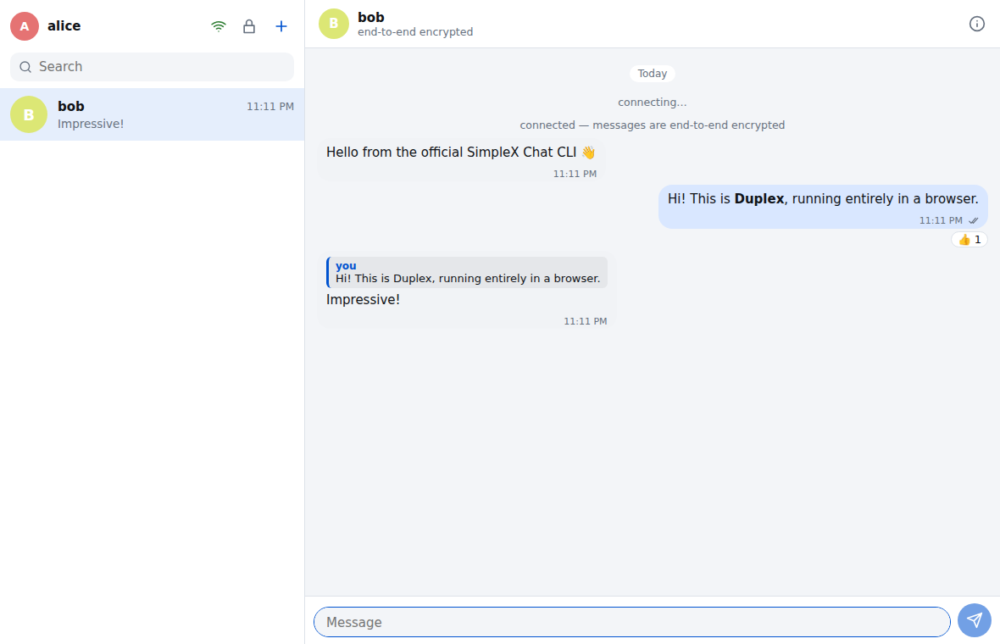

Private messaging on the SimpleX network, in your browser.
Duplex is an unofficial, privacy-focused web client compatible with the SimpleX network. It speaks the SimpleX protocols itself — TLS 1.3, the SimpleX Messaging Protocol, the double ratchet and the chat protocol — entirely inside this page. You can talk with people who use the SimpleX Chat apps without installing anything.
Duplex is independent and is not affiliated with or endorsed by SimpleX Chat Ltd.

Features
No user IDs
There are no phone numbers, usernames or account IDs. You connect by sharing a 1-time link or QR code, or a contact address that people can send requests to.
End-to-end encrypted
Messages are encrypted with the double ratchet (X448, AES-256-GCM) with the post-quantum sntrup761 key encapsulation that the apps use, then again for each message queue, and sent over TLS 1.3 to servers that are identified by their key fingerprint.
Works with the SimpleX Chat apps
Text with formatting, replies, edits, deletion, reactions, delivery receipts, disappearing messages, voice messages, profile pictures, contact addresses and requests, address changes, and the same security codes to verify a contact.
Audio and video calls
Calls with the apps, with media encrypted end to end, and screen sharing in desktop browsers. By default they go through the TURN server of SimpleX Chat, so contacts do not see your IP address.
Groups
Join groups by invitation or link, or create your own and add contacts. Each member has an end-to-end encrypted connection with each other member — there is no group server. New members see the recent messages, and groups can have moderators review who joins.
Channels
Create channels served by chat relays, or subscribe to them. Subscribers connect to the relays, not to the owner; changes to a channel count only when signed by its owners, so a relay cannot make them up.
Files, images and videos
Up to 1 GB, encrypted in the page and sent through SimpleX file servers, which only ever see encrypted chunks. Photos lose their location and camera metadata before they are sent.
Private message routing
Messages to your contacts' servers go through one of your servers, which forwards them encrypted: a contact's server does not see where they come from, and yours does not see where they go.
Encrypted at rest
Everything stored in the browser is encrypted with a key derived from your passphrase (Argon2id). Record names are hashed and sizes are padded, so the storage does not reveal your contacts or how much you chat.
Incognito when you want
Connect with a new random profile instead of yours, for one contact. Nothing links it to your other contacts.
Just static files
There is no Duplex server and no account. The page loads nothing from other sites: no analytics, cookies, fonts or third-party scripts, and no link previews.
Your choice of network path
Use the public relays, or run your own relay on your computer — optionally through Tor, with the .onion addresses of the servers.
Change addresses
Move the queue a contact sends to you to a new one, on another server, whenever you like. Duplex follows your contacts' changes too.
Themes and icon packs
Light, Dark, the SimpleX theme of the apps, Black for OLED screens, Sepia and High contrast, with accent colours, and seven open-source icon packs to choose from — all bundled with the page.
How it works
The SimpleX network carries messages through queues on SimpleX servers (SMP routers). Each conversation uses its own pair of queues, one for each direction, created by the clients. Servers do not know which queues belong together, and there is no identifier that links your conversations to each other or to you.
Browsers cannot open the TCP connections the SimpleX servers need, so Duplex asks a Wisp relay for a TCP stream and runs its own TLS 1.3 inside it, checking the server's certificate against the fingerprint in the server address. The relay only passes encrypted bytes along.
this page ──WebSocket──▶ Wisp relay ──TCP──▶ SimpleX servers ◀── your contact's app └──────────── TLS 1.3, SMP, e2e encryption ────────────┘
While the page is open, Duplex stays subscribed to your queues and receives messages immediately. When it is closed, the servers keep the encrypted messages until you come back.
Privacy model
| Can see | Cannot see | |
|---|---|---|
| The Wisp relay | Your IP address, which SimpleX servers you connect to, and when and how much data passes (in fixed-size blocks) | Your messages, contacts, profile and queue IDs — they are inside TLS |
| Your SimpleX servers | The relay's IP address, the queues you use on that server and when messages pass through them, as encrypted fixed-size blocks; for the messages they forward, which server they go to | Your IP address, your messages and profile — there are no accounts or user IDs — and the queues on other servers that your messages go to |
| Your contacts' servers | With private routing, only the address of the server that forwards your messages | Your IP address, the relay's address, your messages and profile |
| SimpleX file servers | The relay's IP address, encrypted chunks of 64 KB to 4 MB, and when they are uploaded and downloaded | The files, their names and real sizes, who sent them and to whom |
| Your contacts | The profile you choose to share (a name, optionally a picture) and your messages | Your IP address and your other contacts |
| The TURN server of calls | Your IP address (calls do not go through the Wisp relay) and that of the contact, and when and how long you talk | What you say or show: media frames are encrypted end to end |
| Group members | The profile you use in the group (it can be incognito), your messages there, and the other members | Your IP address, your contacts and your other groups |
| Codeberg Pages | That this page was loaded, from which IP address and browser | Everything after that: the page does not talk to it again |
| Someone with this browser | That Duplex was used, the number and approximate size of the stored records, and the chosen theme and icons | Without your passphrase: anything else |
The relay you use matters: a public relay is run by someone you do not know, so it learns your IP address and the servers you use. Running your own relay through Tor hides both. Duplex uses one connection per server, so a server can tell that the queues you use on it belong to the same client.
Limitations
- Channels: Duplex does not run as a chat relay, and only the owners of a channel are recognised (not its admins or moderators).
- Calls: no group calls (SimpleX has none), and they ring only while the page is open. Tor Browser disables WebRTC, so calls do not work there.
- Files are kept in the encrypted storage of this browser, which browsers limit in size: save large files to disk.
- No per-connection transport isolation: one connection per server.
- No push notifications: messages arrive while the page is open (notifications can be shown while it is in a background tab).
- One browser tab at a time, and no syncing between devices.
- The data lives in this browser only. If you clear the site data or forget the passphrase, the profile and chats are gone.
Run your own relay
The relay is a single file with no dependencies. With Node.js installed:
git clone https://codeberg.org/portbuster/duplex
cd duplex
npm run relay # or: npm run relay -- --tor
Then open Duplex, go to Settings → Network, choose Relay on this computer (ws://127.0.0.1:8745/) and save. With --tor, the relay connects through Tor (its SOCKS port at 127.0.0.1:9050), and you can turn on Use .onion addresses.